Centralice la atención de WhatsApp de su organización
Una plataforma diseñada para coordinar conversaciones, automatizar respuestas, gestionar campañas masivas y permitir que múltiples asesores trabajen sobre un mismo número de WhatsApp desde cualquier dispositivo.
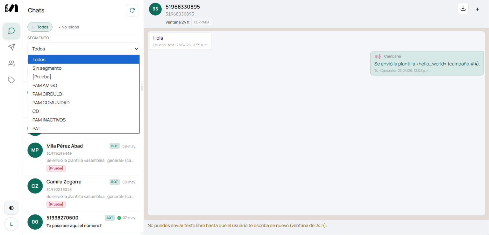
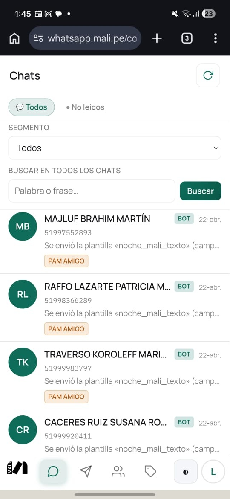
Menos trabajo disperso, más coordinación
Las conversaciones dejan de depender de un único celular o de una sola persona. La plataforma centraliza la atención para que el equipo pueda visualizar el historial completo, continuar conversaciones y trabajar de manera coordinada desde una bandeja compartida.
Beneficios
Atención por asesor en web
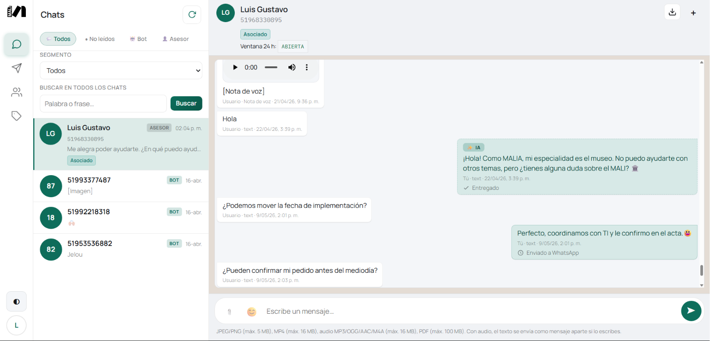
- Un número, todo el equipo
- Roles coordinados
- Historial unificado
Automatización controlada
Las consultas frecuentes pueden resolverse automáticamente mediante IA contextual, reduciendo tiempos de respuesta y carga operativa.
Cuando una conversación requiere atención personalizada, el sistema puede derivarla a un asesor manteniendo el contexto del hilo.
La automatización funciona como apoyo operativo para el equipo, permitiendo que los asesores se concentren en casos que realmente requieren atención personalizada.
Conversación con asistente (IA)
Ahorra tiempo en las preguntas repetitivas
Muchas organizaciones responden diariamente las mismas consultas desde distintos dispositivos y sin un registro centralizado.
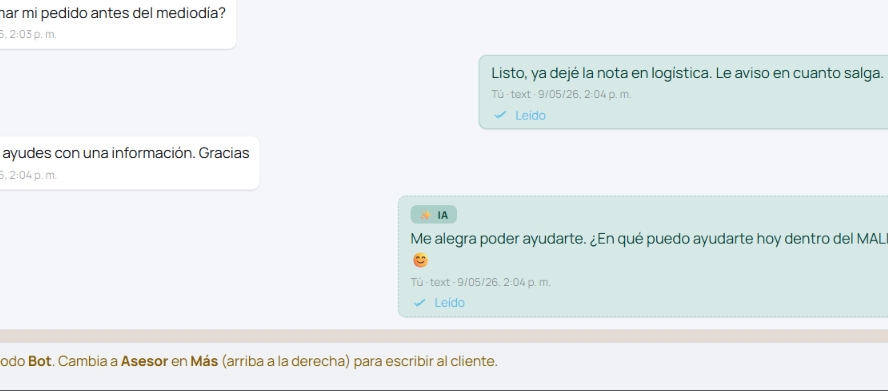
Automatizar respuestas frecuentes
Respuestas coherentes y rápidas sin saturar al equipo.
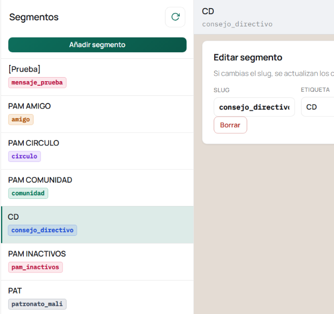
Consistencia y priorización
Mantenga mensajes alineados y enfoque en conversaciones importantes.
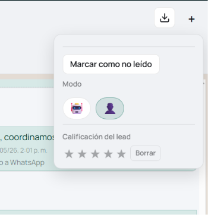
Menos tiempo de atención
Reduzca fricción operativa y mejore la organización del equipo.
- Automatizar respuestas frecuentes
- Mantener respuestas consistentes
- Priorizar conversaciones importantes
Campañas masivas sin bloqueos
Olvidate de listas sueltas, envíos manuales sin seguimiento y bloqueos de WhatsApp por SPAM.
La plataforma permite
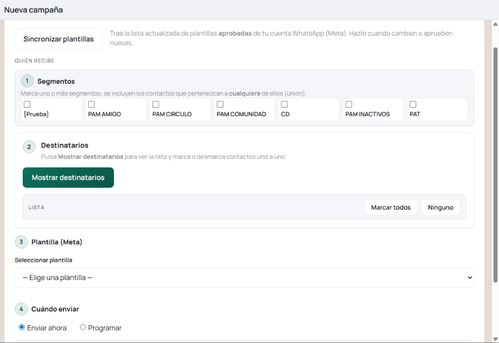
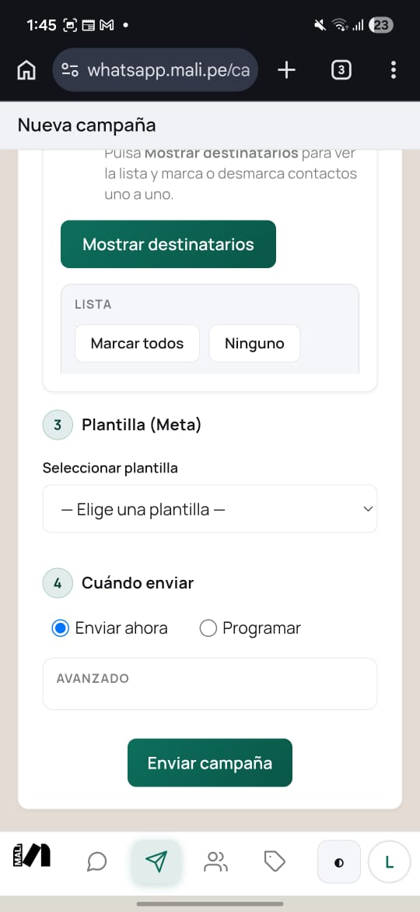
Indicadores para un mejor seguimiento
Siga los envíos correctos, lecturas y errores de los envíos de campañas masivas.
Los datos reales dependen del plan y la configuración.
Campañas e indicadores
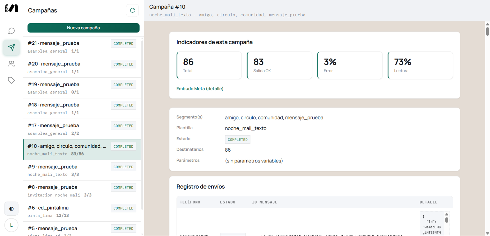
Un WhatsApp, varios usuarios, mucha conversaciones
Cuando varias personas atienden el mismo número de WhatsApp, suele ser difícil saber quién respondió o qué conversaciones quedaron pendientes.
La bandeja compartida permite:
Todo el equipo trabaja sobre la misma bandeja de WhatsApp con filtros claros.
Bandeja compartida
Muy intuitiva y familiar
La interfaz de usuario está inspirada WhatsApp para facilitar el uso y reducir la curva de aprendizaje.
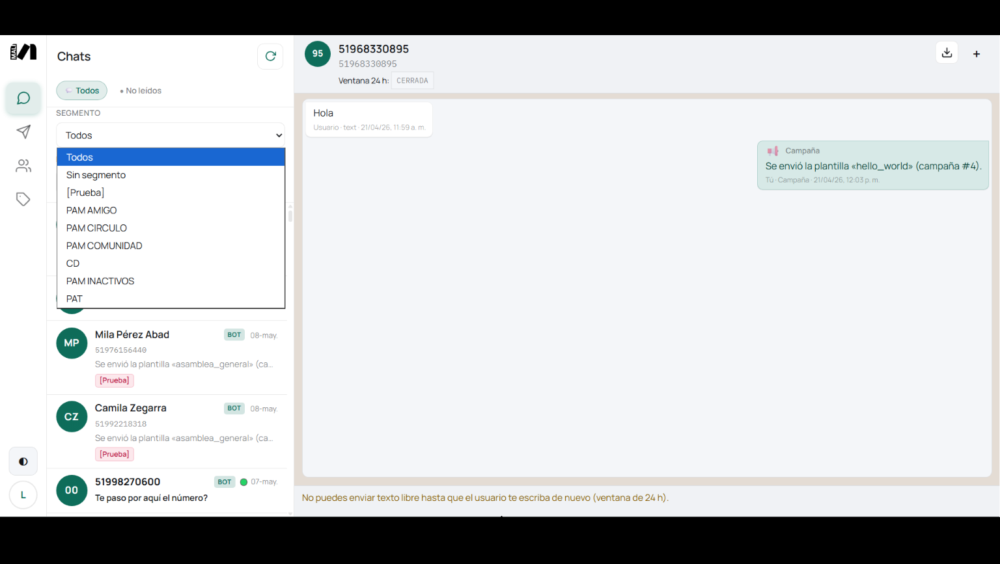
En escritorio
Vista tipo WhatsApp Web.
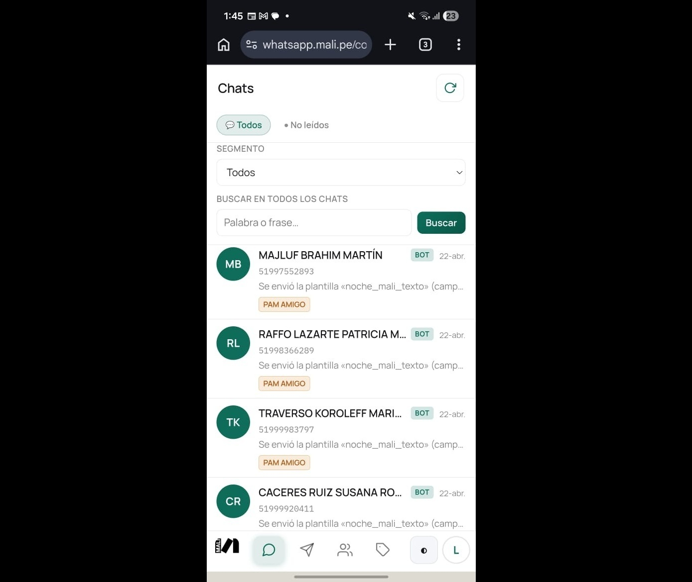
En celular
Vista tipo WhatsApp App.
Segmentos y Clientes
Organice contactos mediante calificaciones, tags y categorías personalizadas para identificar clientes y brindar distintos tipos de atención.
Atención continua sin repetir preguntas
Las respuestas automáticas y la atención por asesores permanecen dentro del mismo hilo conversacional.
Diseñado para organizaciones grandes y pequeñas
La plataforma está orientada a empresas, instituciones educativas, áreas administrativas y equipos que necesitan coordinar atención por WhatsApp de manera más profesional, organizada y escalable.
Precios
Planes que se adaptan a tu empresa
Plan Básico
Por soloS/89 / mes
Instalación: S/ 150 (pago único)
Ideal para centralizar conversaciones y automatizar respuestas básicas.
- 1 número de WhatsApp
- Hasta 2 usuarios (Asesores) incluidos
- Subdominio
miempresa.creart.tech - Campañas masivas básicas
- Automatización básica con IA contextual
- Segmentación mediante etiquetas
- Indicadores básicos
- Soporte básico por correo electrónico
Plan Negocio
Por soloS/179 / mes
Instalación: S/ 200 (pago único)
Mayor capacidad operativa y automatización para su organización.
- 2 números de WhatsApp incluidos
- Hasta 8 usuarios (Asesores) incluidos
- Subdominio
miempresa.creart.tech - Hasta 2000 envíos masivos mensuales
- IA contextual para respuestas automáticas
- Segmentación avanzada mediante etiquetas
- Indicadores avanzados
- Soporte prioritario por correo y WhatsApp
Plan Corporativo
DesdeS/299 / mes
Instalación: S/ 300 (pago único)
Solución personalizada y mayor capacidad para grandes equipos.
- 3 números de WhatsApp incluidos
- Hasta 15 usuarios (Asesores) incluidos
- Dominio propio
miempresa.com - Campañas masivas ilimitadas*
- IA adaptada a su organización
- Segmentación cruzada avanzada
- Indicadores personalizados
- Soporte prioritario por correo y WhatsApp
- Auditoría de conversaciones
- Horario de atención híbrido (Asesor/IA)
* Aplican políticas de uso razonable.
Extras adicionales
| Característica | Precio |
|---|---|
| 📱 Número de WhatsApp adicional | S/ 99 |
| 👤 Usuario (Asesor) adicional | S/ 15 |
| 🤖 Capacidad de IA adicional | S/ 80 |
| 🌐 Dominio propio adicional | S/ 100 |
| ⚙️ Configuración adicional de Meta Business | S/ 100 |
| 🚀 Soporte prioritario adicional | S/ 50 |
Información importante
Solicite una demostración
Descubra cómo centralizar la atención de WhatsApp de su organización, coordinar a su equipo y automatizar respuestas desde una sola plataforma.
Hablar por WhatsApp